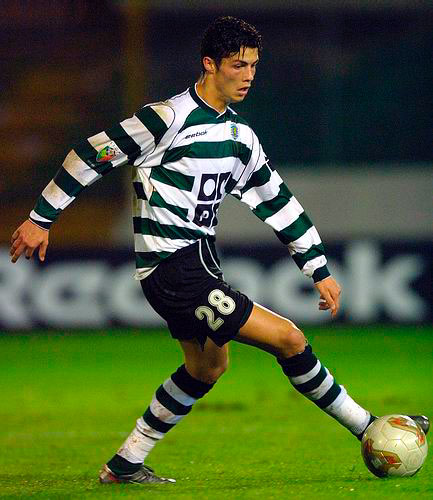
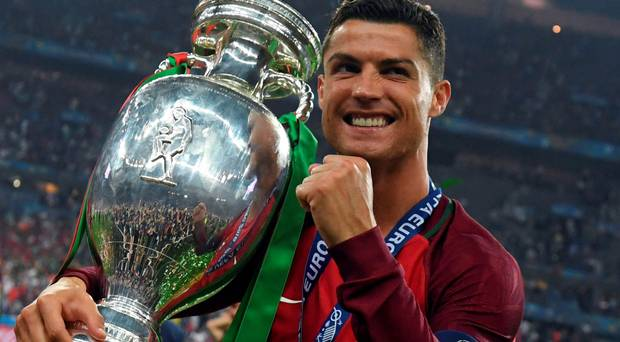

Introduction
Ronaldo dos Santos Aveiro was born in São
Pedro, Funchal, on the island of Madeira, Portugal, and grew up i
n Santo António, Funchal. He is the fourth and youngest
child of Maria Dolores dos Santos Aveiro (b. 1954), a cook, and
José Dinis Aveiro (1953–2005), a municipal gardener and a part-time
kit man. His second given name, "Ronaldo", was chosen after
then-U.S. president Ronald Reagan. His great-grandmother
on his father's side, Isabel da Piedade, was from the island of
São Vicente, Cape Verde. He has one older brother, Hugo
, and two older sisters, Elma and Liliana Cátia "Katia" ,
who is a singer. Ronaldo grew up in a Catholic and impoverished
home, sharing a room with all his siblings.
As a child, Ronaldo played for amateur team Andorinha from 1992 to
1995, where his father was the kit man, and later spent two years
with Nacional. In 1997, aged 12, he went on a three-day trial with
Sporting CP, who signed him for a fee of £1,500.
He subsequently moved from Madeira to Alcochete, near Lisbon,
to join Sporting's other youth players at the club's football
academy. By age 14, Ronaldo believed he had the ability to
play semi-professionally, and agreed with his mother to cease his
education in order to focus entirely on football. While
popular with other students at school, he had been expelled
after throwing a chair at his teacher, who he said had "disrespected"
him. However, one year later, he was diagnosed with a racing heart,
a condition that could have forced him to give up playing football.
Ronaldo underwent heart surgery where a laser was used to cauterise
multiple cardiac pathways into one, altering his resting heart rate.
He was discharged from the hospital hours after the procedure
and resumed training a few days later.
Sporting lisbo
At age 16, Ronaldo was promoted from Sporting's youth team by
first-team manager László Bölöni, who was impressed with his
dribbling. He subsequently became the first player to
play for the club's under-16, under-17 and under-18 teams,
the B team, and the first team, all within a single season.
A year later, on 7 October 2002, Ronaldo made his debut
in the Primeira Liga, against Moreirense, and scored two goals
in their 3–0 win. Over the course of the 2002–03 season,
his representatives suggested the player to Liverpool manager
Gérard Houllier and Barcelona president Joan Laporta.
Manager Arsène Wenger, who was interested in signing the winger,
met with him at Arsenal's grounds in November to discuss a possible transfer.

Manchester United
Ronaldo became Manchester United's first-ever Portuguese player when
he signed before the 2003–04 season. His transfer fee of £12.24
million made him, at the time, the most expensive teenager in English
football history.Although he requested the number 28, his number
at Sporting, he received the number 7 shirt, which had previously been
worn by such United players as George Best, Eric Cantona and David
Beckham.Wearing the number 7 became an extra source of
motivation for Ronaldo. A key element in his development during
his time in England proved to be his manager, Alex Ferguson, of whom
he later said, "He's been my father in sport, one of the most important
and influential factors in my career."
Although his World Cup altercation with Rooney resulted in Ronaldo being
booed throughout the 2006–07 season, it proved to be his breakout year,
as he broke the 20-goal barrier for the first time and won his first Premier
League title. An important factor in this success was his one-to-one training
by first-team coach René Meulensteen, who taught him to make himself more
unpredictable, improve his teamwork, call for the ball, and capitalise on
goalscoring opportunities rather than waiting for the chance to score
the aesthetically pleasing goals for which he was already known.
He scored three consecutive braces at the end of December, against
Aston Villa—a victory which put United on top of the league—Wigan
Athletic, and Reading. Ronaldo was named the Premier
League Player of the Month in November and December, becoming only
the third player to receive consecutive honours.
Real madrid
Ahead of the 2009–10 season, Ronaldo joined Real Madrid for a world
record transfer fee at the time, of £80 million (€94 million).
His contract, which ran until 2015, was worth €11 million per year
and contained a €1 billion buy-out clause. At least 80,000 fans
attended his presentation at the Santiago Bernabéu, surpassing the
25-year record of 75,000 fans who had welcomed Diego Maradona at
Napoli. Since club captain Raúl already wore the number 7,
the number Ronaldo wore at Manchester United, Ronaldo
received the number 9 shirt, which was presented to him by
former Madrid player Alfredo Di Stéfano.
Ronaldo began the 2012–13 season by lifting the Supercopa de España,
his third trophy in Spain. With a goal in each leg by the Portuguese,
Madrid won the Spanish Super Cup on away goals following a 4–4 aggregate
draw against Barcelona. Although Ronaldo publicly commented that
he was unhappy with a "professional issue" within the club, prompted by
his refusal to celebrate his 150th goal for Madrid, his goalscoring
rate did not suffer. After netting a hat-trick, including two penalties,
against Deportivo La Coruña, he scored his first hat-trick in the Champions
League in a 4–1 victory over Ajax. Four days later, he became the
first player to score in six successive Clásicos when he hit a brace in
a 2–2 draw at Camp Nou. His performances in 2012 again saw Ronaldo
voted second in the running for the FIFA Ballon d'Or, finishing runner
-up to four-time winner Messi.
Juventus
Ronaldo won his first trophy with the club in January 2019, the 2018
Supercoppa Italiana, after he scored the game-winning and only goal
from a header against A.C. Milan. On 10 February, Ronaldo
scored and provided an assist for Emre Can in a 3–0 away win over Sassuolo;
this was the ninth consecutive away game in which he had scored for
Juventus in the league, which enabled him to equal Giuseppe Signori's single
season Serie A record of most consecutive away games with at least one goal.
On 12 March, Ronaldo scored a hat-trick in a 3–0 home win against
Atlético Madrid in the second leg of the Champions League round of 16, helping
Juventus overcome a two goal deficit to reach the quarter-finals. The
following month, Ronaldo scored his 125th goal in the competition, opening
the scoring in a 1–1 away draw in the first leg of Juventus' quarter-final
against Ajax, on 10 April. In the second leg in Turin on 16 April,
he scored the opening goal of the match in the first half, but Juventus
eventually lost the match 2–1, and were eliminated from the competition.
National team
In Portugal's first knockout match, Ronaldo's only attempt on goal was parried
by Croatia's goalkeeper into the path of Ricardo Quaresma, whose finish then
secured a 1–0 victory late in extra time. After his team progressed past
Poland on penalties, Ronaldo became the first player to participate in
three European Championship semi-finals; he scored the opening goal and
assisted a second in a 2–0 win against Wales, equaling Michel Platini as the
competition's all-time top scorer with nine goals. In the final against
hosts France, Ronaldo was forced off after just 25 minutes following a
challenge from Dimitri Payet. After multiple treatments and attempts to
play on, he was stretchered off the pitch and replaced by Quaresma.
During extra time, substitute Eder scored in the 109th minute to earn
Portugal a 1–0 victory. As team captain, Ronaldo later lifted the
trophy in celebration of his country's first-ever triumph in a major
tournament. He was awarded the Silver Boot as the joint second-highest
goalscorer, with three goals and three assists, and was named to the
team of the tournament for the third time in his career.

Adds
As his reputation grew from his time at Manchester United, Ronaldo has signed many
sponsorship deals for consumer products, including sportswear, football boots
(since November 2012 Ronaldo has worn the Nike Mercurial Vapor personalized CR7 edition),
soft drinks, clothing, automotive lubricants, financial services, electronics and
computer video games. Ronaldo was featured as
the cover athlete of EA Sports' FIFA video game FIFA 18 and was heavily involved in
the game's promotion. His 'Siiii' goal celebration features in the FIFA series,
accompanied with his own voiceover. He was also the face of Pro Evolution Soccer,
appearing on the cover in 2008, 2012 and 2013.
wealth
Forbes has twice ranked Ronaldo first on its list of the world's highest-paid football
players; his combined income from salaries, bonuses and non-football earnings
was $73 million in 2013–14 and $79 million in 2014–15. The latter
earnings saw him listed behind only boxer Floyd Mayweather, Jr. on the magazine's
list of The World's Highest-Paid Athletes. In 2016, he became the first footballer
to top the Forbes list of highest-earning athletes, with a total income of $88
million from his salary and endorsements in 2015–16. He topped the list for
the second straight year with earnings of $93 million in 2016–17. Ronaldo is
one of the world's most marketable athletes: SportsPro rated him the fifth most
marketable athlete in 2012, and eighth most marketable athlete in 2013,
with Brazilian footballer Neymar topping both lists. Sports market
research company Repucom named Ronaldo the most marketable and most recognised
football player in the world in May 2014. He was additionally named in
the 2014 Time 100, Time's annual list of the most influential people in the
world. ESPN named Ronaldo the world's most famous athlete in 2016, 2017 and 2018

Charity
is no secret as to why Ronaldo sports no tattoos which cover the bodies of the
other players of his generation. He regularly donates blood at a clinic in his home
country of Portugal and would not scar his body with tattoo needles that might prevent
him from doing so. However, the first incident that opened his mind to the importance of
donating blood to people in need involved a teammate of his at his national team.
Very recently, it was reported that he had donated the entirety of his Euro 2016
bonus prize money to a foundation that funds children's cancer research. Earlier,
he had also come out in complete support of Palestine in their ongoing skirmish
against Israel. In November 2012, the star donated €1.5 million to the Palestinian
children in Gaza- his way of reaching out in any way he can.class="vvBigs"